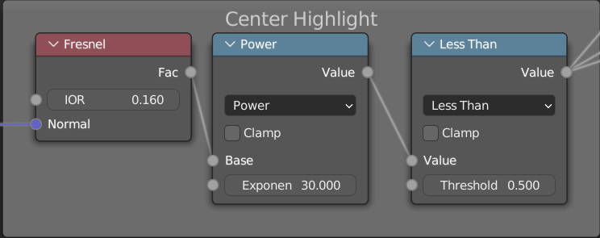

This project was completed as part of a final for "Early Modern Literature: The Floating World of Play and Passion",
a course taught by Prof. Clarence Lee at University of Colorado, Boulder.
Adapted from Asai Ryoi's "Hand Puppet's", Project::Ukiyo「浮世」 is a modern haunting of the peony lantern.
Here the lantern decorated with peonys represents the presence of the ghost from the "original" work.
Concept
Breakdown
I've included a thorough breakdown containing images, concepts, and code to better help the reader understand the process of Project::Ukiyo「浮世」's making.
Scene Breakdown
Object [Parent-Child] Heirarchy
Background
Smoke
Lantern Body
Flower
Fabric/ Cloth
Outer Light
Inner Light
Lantern Text
Lantern Handle
Camera Setup (Empty)
Camera
Pink Text
Focus Point (Empty)
The following showcases the object heirarchy, which is responsible for what coordinate systems objects are relative to.
Children will move relative to their parent object. Here I have two 'rigs' for the camera setup and lantern.
The lantern is a rigid body, so the children of the lantern move with the lantern.
The camera system includes a variety of elements, first the pink text is parented onto the camera so that it stays in the same window position through different camera positions.
An empty is added to this system, where a modifier is applied to constrain the camera pointing towards it- this gives freedom in adjusting camera angles.
Finally, the background and smoke are layered visual elements and are not dynamic- although the background is repositioned per camera angle.
Shaders
Shaders drive nearly every visual aspect of this project.
I've included breakdowns for shaders on the lantern-body, fabric, and smoke.
Lantern
The "original" peony lantern is described as hand-painted; thus it was important to also include a 'hand-painted' (stylus-pen-painted) quality to the lantern's look.
Thus, the base diffuse color is from a texture painted in substance painter.
Next, we want the edges to be transparent to suggest the 'ghostly' qualities of this japanese ghost lantern.
Since the object is round, a fresnel effect is perfect for this.
But, we want some varience in the fresnel so that the transparency-fade doesn't appear to uniform.
This can be done by mixing some noise with the true normal vector (left).
Passing this into a fresnsel then gives (middle).
Finally, to emphaisze the effect we pass that through a float curve and map-range (right).
A similar mapping of the fresnsel effect can be used to mask out an outline (left). Put together, this gives us the alpha value (middle).
The outline mask can also be used as a mixing factor for the outline color and diffuse texture (right).
Next, we want to create a highlight in the center of the lantern.
The idea is to have a shadow (outline), base color (texture), and highlight (this)- where the highlight will bring out the brightness inside of the lit lantern.
Again we'll use a fresnsel, this time with a MUCH lower index of refraction and take the power of it to some large number to get something close to a [0,1] color mask.

Finally, everything up until now has provided an incredibly glossy texture (especially the highlight).
This looks much more like a potery lantern than a paper one. So, the last detail we need to add is the rings which emphasize both the paper lantern's imperfect shape and thin material.
This is fairly easy- what we do is take the z-coordinate (up), multiply it by the ring frequency we want, take the sine of that, and take the absolute value.
We do this twice, once for the highlight (left) and once again for the shadow (right) with an offset coordinate.
After Combining them we get a gradient value which we can mix into the base color to imply how lighting works (which is very very fake lighting).
For reference, here is the node setup of this part. Notice, there are also a few additional operations to map the values providing a greater visual contrast.
Fabric
Here, we want the fabric to slowly fade out, similar to a ghost tail. We also want to have a nice white-blue-violet gradient.
The first step is finding a coordinate system to use, we can't use actual positions since this will deform- so we use a UV map.
Since, were not mapping a texture to this, the islands may overlap since the UVmap is only used to get a relative height of the fabric.
Then, a wave texture (left) (created with the UV position) is applied ontop of the height (right).
This is plugged directly into the alpha channel of our shader.
Next, a basic noise texture (left) is also added onto the height to create a second 'height' (middle) will be used for the color ramp (right).
This is then applied to the diffuse and emission channels, with emission set at 1.
Smoke
For our smoke effect, we apply a line cross-section to a bezier curve to get a scroll-type geometry, this will auto-generate a UV.
Since we also want to animate this, we'll create two additional coordinate values (T, and X+T) representing time and the position along the curve over time.
Along the curve, we want the center of the smoke to move around (left-right) in a zig-zag motion.
This will recreate a turbulence effect and really bump up the dynamics of our animation.
To accomplish this, we'll feed in the rolling vertical position (X+T) to a 1D noise function (left) which represents the horizontal offset of the center.
We'll multiply this offset with a float curve so that the offset is small at the beginning and grows towards the end of the curve.
This is then added onto the horizontal center of our smoke geometry (right).
In actuality, we want two "centers" to highlight the transparent middle where the centers fork off into different directions on each side.
To do this, we take the sign (left) of which side were on and multiply that by a second float curve, adding it ontop the original 'center' (right).
Next, the absolute value is taken of the 'two-center-mapping' (right above).
This gives a distance function from each center (left-most).
Then we generate noise (middle-left) using the rolling coordinates (X+T,Y,T). Notice that this is a vector3, using T as another dimension allows the noise to change over time.
Next, the noise is overlayed ontop of the distance field (middle-right).
Finally, we perform a check on the distance to see if it is within a certain range which creates a mask (right-most) we can use as the alpha channel.
Procedural Flower
The peony flower featured in the Peony lantern is entirely procedural here (except the pedals).
This allows for significant customization.
The method for accomplishing this is by first implementing the phyllotaxis algorithm.
I referred heavily to Erindale.xyz's tutorial for the concepts, however made significant changes to the inner radius parameter and translated this into blender's geometry nodes feature.
This gives a spiral to seed flower petals off of.
We then customize various other transformation's including z-offset (up), rotation, and scale.
For the z-offset a float-curve is plugged into the fac output of the phyllotaxis setup ([0-1] range describing distance from center).
For rotation, we have 3 values to compute (roll, pitch, and yaw).
The flower's generally are bent towards the center, so the roll value is negligable- although in this setup I plugged a minimal amount of noise into it.
For pitch, we can use a float curve similar to the z-offset calculation and map that to a [0, -90] degree range.
Finally, for the yaw, we simply take the atan2 of the x/y relative positions.
Plugging all this into a rotate euler node, gives us the desired rotation.
As for scale, another float-curve similar to above is used.
A white noise texture is used to create varience between sizes as well.
Assets
NOT EVERYTHING in this project is my work, this includes the background and sound assets used.
As for the background, it is a background cel taken from Studio Ghibli's Spirited Away developed by Kazuo Oga,
and commented on in Spirited Awaya's Art Book by Takeshige (Miyazaki "The Art of Spirited Away"; page 60).
In this scene there is minor recoloring- and the entire background cel is not featured (omitting the mini house statues).
As for sounds, I wanted traditional Japanese instruments to accompany the project.
But could not find anything googling with English searches;
but upon a japanese search I quickly found a beautiful sound repository at: otologic.jp
and at commons.nicovideo.jp .
Technical Direction
Below, I've included various TD design choices and commentary on the project.
This includes color theory analysis, compositing/post-processing tricks, scene composition, animation and camera work, and lighting setup.
Lighting, Color, Rendering Passes
Let's start with the rendering passes.
Combined/ Final
Diffuse Color
Emission Color
Shadow
Gloss Color
Bloom
Emission and Bloom
Many components in our scene are lit in some form with emission light [Background, Fabric, Smoke, Lantern, and textual elements].
This served two purposes: to saturate the colors and provide a bloom effect.
If we were to simply increase the global ambient light/color, then the bloom effect would not come across as well.
The reason for having a bloom effect is that the objects in this scene are "ghostly".
If we look at original Ukiyo-e depictions of the lantern, we can see that color is brightest on these objects.
Color Scheme
We also notice that the background and foreground vary color-wise; although pigments were less saturated during the creation of the "originals" above.
This inspired a similar contrast in our diffuse colors.
The background exhibits [greens, green-yellows, blues, browns, greys] whereas the foreground showcases [red, pinks, purples, and blues].
This is roughly close to complimentary colors on the color spectrum, especially with pinks on dark green elements.
Transparency
Most elements in the scene are also transparent [Smoke, Fabric, Lantern].
Two different implementations are transparency are used here (Alpha hashed, and alpha-blending).
Alpha hashed has a notable grainy result, akin to ray-tracing and provides relatively accurate forms of transparency.
This is used in both the smoke and fabric.
This was mainly to add texture to both elements and a gradient transparency to the fabric which cannot be done with alpha-clipping.
Then, alpha-blending was used on the lantern.
This is why the lantern is not visible in the render passes, as transparent objects are deffered after the initial render.
Whereas, alpha-hashing can provide a gradient- it cannot be used jointly with emission; you can see above that the smoke is not transparent but is emissive.
The lantern uses both emission (because lighting is faked internally) and transparency, thus alpha-lending was choosen.
Lighting
Beyond emission, this scene also utilizes two small light sources parented under the lantern.
The first is colored inkish-red, and the second is a light blue.
Together, these form the light gradient on the flower (which has zero emission).
The flower, uses a translucent shader which allow light from within the lantern to bleed through the layers of petals.
Here a bias parameter was adjusted to prevent light from blocking out to early.
Post-Process/ Compositing
You'll notice, that noise is overlayed ontop of the flower texture.
This noise was overlayed on each element changing the saturation, hue, and value of underlying colors.
Its most apparent on the flower, due to motion and lack of emission - but is meant to texture the entire scene similar to original ukiyo-e paintings as a cohesive visual quality.
This is done closer to a post-processing technique, but is performed at the end of each respective shader.
Simulation
The cloth utilizes a cloth simulation.
Here a vertex group is created of the top-most vertices which are used to pin the cloth.
Since the cloth is parented under the lantern, the animated lantern also drives the positioning of the pinned vertices which create motion in the cloth physics.
Two forces are primarily used for the cloth simulation: gravity and wind.
The wind angle points top-left erpendicular to the camera angle.
This is done so that the motion of the cloth is clear and most visible from the camera angle.
And because the cloth is light, the amount of gravity and mass of cloth vertices are both decreased.
After the physics were tuned, the simulation is baked.
Animation
Camera Angles
The subject of the scene is the lantern.
The goal is to portray the lantern as something exotic, interesting, and supernatural (in this case an extension of nature).
To accomplish this, multiple camera angles were setup to "document" the lantern.
This perspective would have been lost if the camera was animated between angles, as the camera becomes an additional subject of the scene
and the lantern is no longer isolated in its own environment.
This was realized after attempting to animate the camera, which I had initially wantd to showcase the dynamic transparency of the lantern.
Discrete camera angles also allowed for sudden transitions in the animation and layering the various visual aspects so that the animation never became boring.
The primary visual of the first shot is the smoke coming from the lantern.
Then in the second shot, the viewer notices the subtle details of the flower and lantern which were too small before; its something new.
Finally in the last shot, we get a side profile of the scene which better place it in 3D and contribute to the "documentation" of the peony lantern.
Lantern Keyframe
The lantern uses a key animation on 40s to swing back and forth between roughly two angles.
This was to showcase its physical nature as a lantern which swings on the pivot of the handle.
Without this animation, the stationary object would have been confusing because no physics would be involved.
The presence of actual physics also suggest that the lantern is accurately floating and is held by some invisible object.
Of course a ghibli-style hand holding the handle and fading out at the wrist would have also been a nice touch for this quality, but out of my animation skillset.
At one point, I actually attempted 2D animating the smoke to no avail (releazied the skillset and timeframe were not realistic), thus began a shader-based implementation on that animation.
Rendering Process
There were many renders, there were several a day for at least an entire week (~40 renders start to finish).
To expedite the rendering process, I set the frame rate to 12.
On the final render this could have been set higher, but I found the more choppy motion more representative of the theme.
A dedicated laptop was used as a sole rendering farm, with fairly modern technology averaging a frame every 4 seconds.
Oftentimes, segments of the entire video were rendered to analyze certain components.
For example, only the first camera angle was used to check if the smoke animation was carried out as desired.
Miniature renders were used to analyze color-setting, accurate motion, desired line-art thickness, textual placing, simulation correctness, and many other elements of this project.
Wrap Up / Final Notes
I'm personally beyond impressed with this project.
It was my first production project, everything else has nearly focused on specific aspects which would be pieces of an entire product.
But here I've implemented simulation, animation, post-processing, lighting with my knowledge of animation production as a whole.
I can say that there is nothing like waiting on renders/bakes to finish while doing another task.
The workflow can be very diverse, the things one works on are different throughout the project, and there is immense room for creativity.
Applications of principles in art, tech, animation, and production all come together in these projects which is a great learning boost.
The scope is also incredibly managable (opposed to my previous projects attempting to make whole 3D games).
Ultimatly, this stands at the top of my favorite projects and the class for which I made this stands at the top of my favorite courses.
Surprisingly, this came about with ABSOLUTELY NO animation courses, film courses, or 3D courses.
So as something largely created out of self-discipline and learning, I'm truly very proud to say I have produced this small animation of the infamous Japanese Peony Lantern.